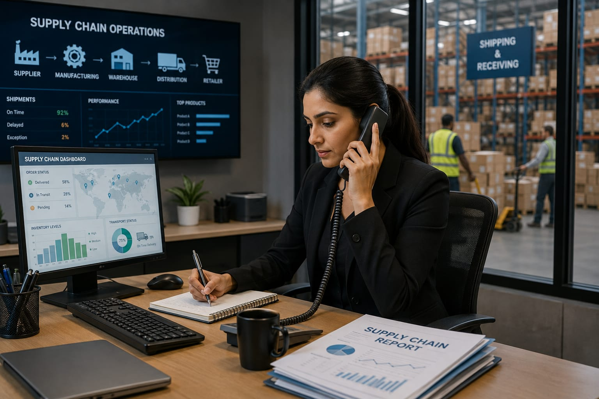

- Imagine a company makes thousands of products every day.
- Someone should make sure the products move from factories to warehouses and finally reach customers on time.
- That person is called a Supply Chain Manager.
- 👉 In simple words: Supply Chain Managers help products move smoothly from one place to another.
Supply Chain Manager
🧑🎨 What Do They Do?

🎓 How to Become a Supply Chain Manager
These supply chain management programs help students learn logistics planning, warehouse operations, transportation systems, inventory management, and business coordination skills.
BBA in Supply Chain Management
Duration: 3 Years
Eligibility: Class 12 Pass from any stream
Entrance Exam: CUET or university-specific entrance exams
B.Tech in Production and Industrial Engineering
Duration: 4 Years
Eligibility: Class 12 with Physics, Chemistry, and Mathematics
Entrance Exam: JEE Main, JEE Advanced, or state engineering entrance exams
Bachelor of Logistics & Supply Chain Management
Duration: 3 – 4 Years
Eligibility: 12th Pass from a recognized board
Entrance Exam: University Entrance Test / Merit-Based Admission
📝 Exam Details
(Click on the exam name to see full details)
CUET JEE Main JEE Advanced State Engineering Entrance ExamsNote: These courses mainly focus on logistics planning, transportation systems, warehouse operations, inventory management, production systems, and supply chain coordination.
These postgraduate supply chain and operations programs help students learn advanced logistics planning, warehouse systems, transportation strategy, inventory optimization, and global supply chain management.
MBA in Operations and Supply Chain Management
Duration: 2 Years
Eligibility: Bachelor’s degree in any stream
Entrance Exam: CAT, XAT, MAT, or GMAT
PGDM in Logistics and Supply Chain Management
Duration: 2 Years
Eligibility: Graduation in any field
Entrance Exam: CAT, XAT, CMAT, or MAT
M.Tech in Industrial Engineering & Management
Duration: 2 Years
Eligibility: B.Tech / B.E Degree
Entrance Exam: GATE
Note: These postgraduate programs mainly focus on advanced logistics systems, operations management, transportation planning, warehouse optimization, global supply chain networks, and business strategy.
These certification programs help students learn supply chain planning, warehouse operations, inventory control, transportation systems, procurement, and logistics management skills.
Certified Supply Chain Professional (CSCP)
Duration: 3 – 6 Months
Eligibility: Open to graduates or working professionals
Entrance Exam: No exam
Provider: ASCM (Association for Supply Chain Management)
Certified Professional in Supply Management (CPSM)
Duration: 3 – 6 Months
Eligibility: Graduates with professional experience
Entrance Exam: No exam
Provider: ISM (Institute for Supply Management)
Supply Chain Management Specialization
Duration: 3 – 4 Months (Self-paced)
Eligibility: Open to all beginners
Entrance Exam: No exam
Provider: Coursera (Offered by Rutgers University)
Operations & Supply Chain Management Complete Masterclass
Duration: 7 – 10 Hours
Eligibility: Open to all
Entrance Exam: No exam
Provider: Udemy
Supply Chain Management A-Z: SCM & Logistics Operations
Duration: 4 – 6 Hours
Eligibility: Open to all
Entrance Exam: No exam
Provider: Udemy
Note: These certification courses mainly focus on practical supply chain systems, logistics operations, procurement, inventory management, transportation planning, and warehouse optimization skills.
Note:
(Age limits, marks, and admission process may vary depending on the college or state. These courses are available in many colleges and universities across India. You can choose colleges based on your location, budget, and entrance exams.)
🏛️ Top Colleges in India
(Tap on a college to view the details)
After 12th (Degrees & Professional Diplomas)
UPES (University of Petroleum and Energy Studies), Dehradun Chitkara Business School, Patiala LPU (Lovely Professional University), Phagwara Amity University, Noida Indian Maritime University (IMU), ChennaiAfter Graduation (PG & Advanced Management)
IIM Mumbai (Formerly NITIE) XLRI, Jamshedpur IIM Udaipur Management Development Institute (MDI), Gurgaon SJMSoM, IIT BombayTop Certification Providers & Online Platforms
ASCM (Association for Supply Chain Management) ISM (Institute for Supply Management) Coursera (Rutgers & Georgia Tech Programs) Udemy (SCM Masterclasses)STEP 1
Imagine you are working as a Supply Chain Manager in a company.
STEP 2
A customer orders a product online from another city.
STEP 3
You check whether the product is available in the warehouse and plan how it should be delivered.
STEP 4
You coordinate with suppliers, warehouses, transport teams, and delivery services to make sure everything happens smoothly.
STEP 5
The customer receives the product safely and on time and feels happy.
STEP 6
If you enjoy planning, organizing, and managing products and deliveries, this career may suit you.
Where do Supply Chain Managers work? (Job Roles + Growth)
These are some roles you can explore in Supply Chain Management.
You usually start with beginner roles and grow with experience.
🟢 Beginner Roles
🛒
Procurement Associate
(After BBA in Supply Chain Management)
Researches vendors, compares prices, and issues purchase orders.
🔄
Supply Chain Coordinator
(After B.Tech in Production Engineering)
Coordinates suppliers, factories, warehouses, and delivery teams.
📦
Inventory Executive
(After B.Com in Supply Chain Management)
Tracks stock levels and manages warehouse inventory systems.
🚚
Logistics Assistant
(After Diploma / Certification Course)
Helps manage shipments, transportation schedules, and dispatch work.
🔵 Mid-Level Roles
🌐
Strategic Sourcing Specialist
(After CPSM Certification + Experience)
Negotiates contracts with vendors and manages material sourcing.
📊
Supply Chain Analyst
(After Operations & Supply Chain Masterclass)
Studies supply chain data and forecasts future product demand.
🏭
Production Planning Manager
(After Graduation + Industry Experience)
Plans factory production schedules and material requirements.
🚢
Global Logistics Executive
(After Supply Chain Specialization)
Handles international shipments, imports, and export operations.
🟣 Advanced Roles
🌍
Director of Global Sourcing
(After MBA in Operations & Supply Chain Management)
Designs international sourcing strategies and manages global suppliers.
🏢
Chief Supply Chain Officer (CSCO)
(After CSCP Certification + Experience)
Oversees the company’s complete supply chain and distribution network.
📈
Operations Director
(After MBA + Senior Management Experience)
Leads company operations, logistics teams, and business performance.
🚢
International Shipping Companies
Manage global cargo transportation, shipping routes, and international deliveries.
✈️
Air Cargo & Aviation Logistics
Handle airport cargo systems and worldwide freight transportation operations.
🛒
Global E-Commerce Companies
Manage warehouses, inventory systems, and fast deliveries across countries.
🏭
Manufacturing & Supply Chain Companies
Coordinate suppliers, factories, warehouses, and product distribution networks.
🌐
International Retail Chains
Plan product movement and supply operations for stores around the world.
💻
Remote Supply Chain Consulting
Some professionals help companies improve logistics and supply systems remotely.
(Click Yes or No for each question)
1. When you buy something online, have you ever wondered how it reaches the shop or your home?
2. Are you interested in learning how products move from factories to shops and customers?
3. Do you enjoy planning and organizing things properly?
4. Have you ever wondered how companies manage products, warehouses, and deliveries together?
5. Imagine a company needs to move products from factories to stores and customers on time. You help plan and manage everything properly. Does this excite you?